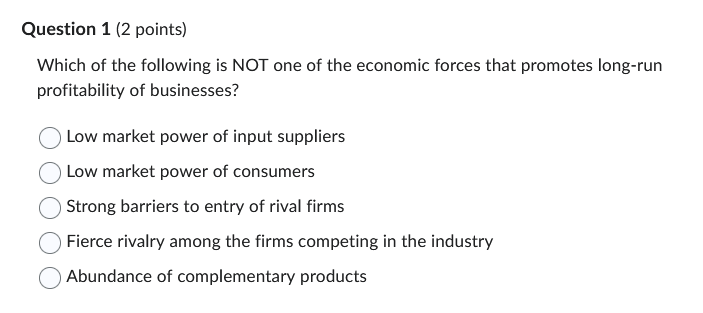
السؤال: إيه من دول مش من القوى الاقتصادية اللي بتدعم ربحية الشركات على المدى الطويل؟
الإجابة: Fierce rivalry among the firms competing in the industry (المنافسة الشرسة بين الشركات) ✅
ليه اخترنا دي؟ (الشرح بالبلدي): بص يا سيدي، دي نظرية "قوى بورتر الخمسة" (Porter's 5 Forces). النظرية دي بتقولنا إيه اللي بيخلي الصناعة "جذابة" وتكسب، وإيه اللي يخسرها. * لو الموردين (اللي بنشتري منهم) ضعاف -> ده حلو لينا (بنفرض شروطنا). * لو العملاء (اللي بنبيع لهم) ضعاف -> ده حلو لينا (بنغلي السعر براحتنا). * لو صعب حد جديد يدخل السوق (Barriers to entry) -> ده حلو لينا (بنحتكر السوق). * لو فيه منتجات مكملة لينا كتير -> ده حلو لينا (بيزود الطلب علينا). * أما بقى لو فيه "منافسة شرسة" (حرب وتكسير عضم) بينا وبين الشركات التانية؟ -> ده وحش جداً! * لأننا هنضطر نحرق في الأسعار ونزود مصاريف الإعلانات، ففي الآخر ربحنا هيقل. عشان كده دي الحاجة الوحيدة في الاختيارات اللي مش بتدعم الربحية، بالعكس دي بتدمرها.
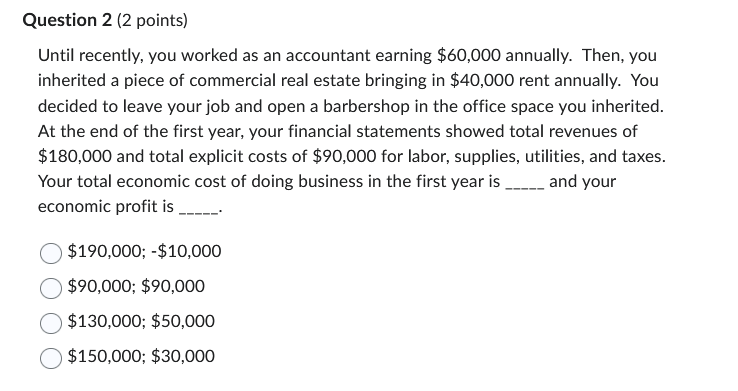
السؤال: محاسب مرتبه 60 ألف، عنده عقار بيأجره بـ 40 ألف. ساب الشغل وبطل يأجر العقار وفتح محل حلاقة. إيرادات المحل 180 ألف، ومصاريفه (كهرباء وعمالة) 90 ألف. عايز يعرف: التكلفة الاقتصادية (Economic Cost) و الربح الاقتصادي (Economic Profit).
الإجابة: $190,000; -$10,000 ✅
الحسبة جت منين؟: في الاقتصاد، التكلفة مش بس اللي بتدفعه من جيبك (Explicit)، لأ وكمان اللي "خسرته" أو "ضحيته بيه" (Implicit/Opportunity Cost).
نحسب التكلفة الاقتصادية الكلية:
نحسب الربح الاقتصادي:
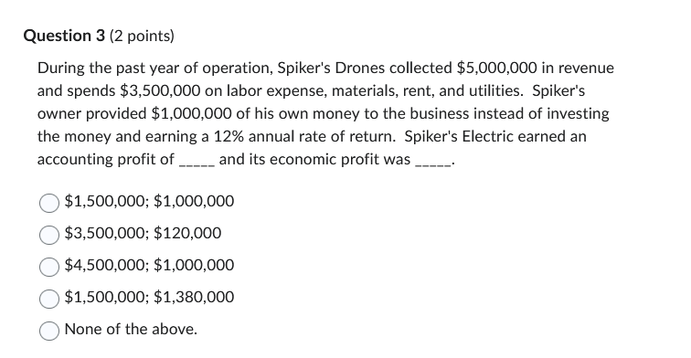
السؤال: شركة إيراداتها 5 مليون، وتكاليفها الصريحة 3.5 مليون. صاحب الشركة استثمر مليون دولار كان ممكن يحطهم في البنك بفائدة 12%. عايز: الربح المحاسبي و الربح الاقتصادي.
الإجابة: $1,500,000; $1,380,000 ✅
الشرح: 1. الربح المحاسبي (زي ما المحاسب بيحسب): * إيراد - مصروفات فعلية * $5,000,000 - 3,500,000 = \textbf{1,500,000}$
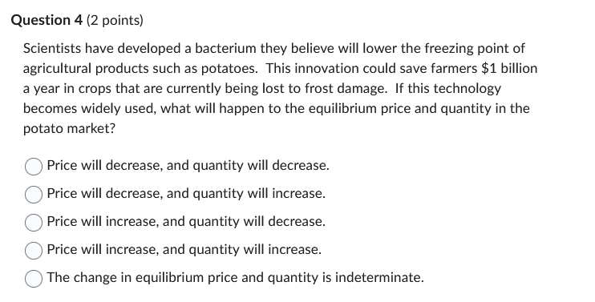
السؤال: اكتشفوا تكنولوجيا جديدة (بكتيريا) بتقلل أضرار الصقيع على المحاصيل، وده وفر مليار دولار سنوياً للمزارعين. إيه اللي هيحصل للسعر والكمية؟
الإجابة: Price will decrease, and quantity will increase. (السعر هيقل، والكمية هتزيد) ✅
ليه؟: * تكنولوجيا جديدة بتوفر فلوس = تكلفة الإنتاج قلت. * لما التكلفة تقل -> منحنى العرض (Supply) بيزيد (يعني يتحرك لليمين Shift Right). * تخيل الرسمة: لما العرض يزيد (والطلب ثابت)، الحاجة بتبقى متوفرة كتير في السوق، فـ سعرها ينزل والناس تشتري كمية أكبر.
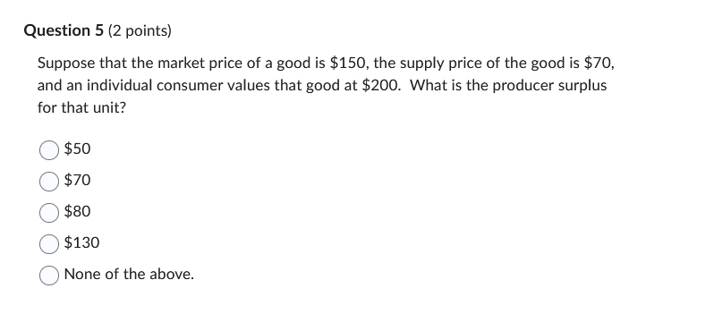
السؤال: السعر في السوق 150. الشركة كانت مستعدة تبيع بـ 70. المستهلك قيم المنتج بـ 200. عايز: فائض المنتج (Producer Surplus).
الإجابة: $80 ✅
الحسبة: * فائض المنتج هو الفرق بين "السعر اللي باع بيه فعلاً" و"أقل سعر كان راضي بيه". * هو باع بـ 150. * كان راضي يبيع بـ 70. * مكسبه الزيادة (الفائض) = $150 - 70 = \mathbf{80}$. * (ملحوظة: الـ 200 دي عشان يحسب فائض المستهلك، مش محتاجينها هنا).
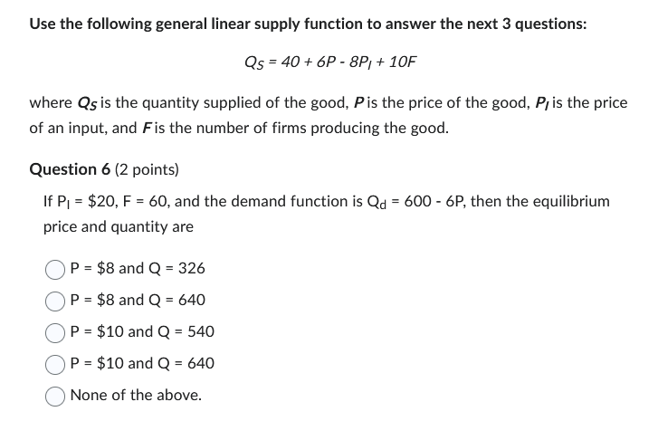
السؤال: مديك معادلتين وعايز سعر وكمية التوازن. * معادلة الطلب: $Q_d = 600 - 6P$ * معادلة العرض (بعد التعويض بالأرقام اللي مديهالك $P_I=20, F=60$): * كانت: $Q_s = 40 + 6P - 8P_I + 10F$ * نعوض: $Q_s = 40 + 6P - 8(20) + 10(60)$ * $Q_s = 40 + 6P - 160 + 600$ * نبسطها: $Q_s = 480 + 6P$
الإجابة: P = $10 and Q = 540 ✅
خطوات الحل: 1. ساوي الطلب بالعرض (Equilibrium): $$600 - 6P = 480 + 6P$$ 2. جمع الـ P في ناحية والأرقام في ناحية: $$600 - 480 = 6P + 6P$$ $$120 = 12P$$ 3. هات قيمة P: $$P = 120 / 12 = \mathbf{10}$$ 4. عوض بـ P في أي معادلة عشان تجيب Q: $$Q = 600 - 6(10) = 600 - 60 = \mathbf{540}$$
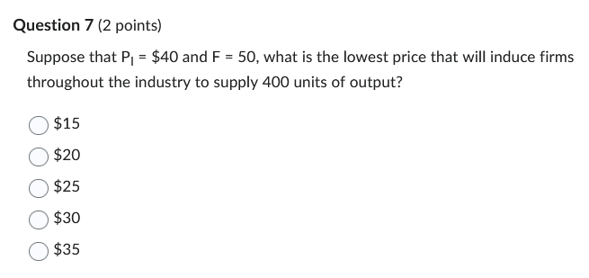
السؤال: مديك معطيات جديدة ($P_I=40, F=50$) وعايز السعر اللي يخلينا ننتج كمية 400 وحدة.
الإجابة: $30 ✅
الخطوات: 1. نحسب معادلة العرض الجديدة بالأرقام الجديدة: * $Q_s = 40 + 6P - 8(40) + 10(50)$ * $Q_s = 40 + 6P - 320 + 500$ * $Q_s = 220 + 6P$ 2. هو مديك الكمية $Q = 400$، وعايز السعر $P$: * $400 = 220 + 6P$ * $400 - 220 = 6P$ * $180 = 6P$ * $P = 180 / 6 = \mathbf{30}$
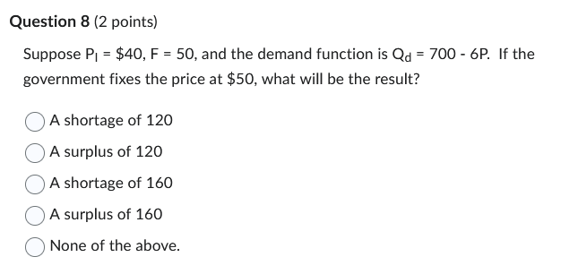
السؤال: الحكومة حددت السعر عند 50 دولار. إيه اللي هيحصل؟ (باستخدام نفس بيانات السؤال 7). * معادلة العرض: $Q_s = 220 + 6P$ * معادلة الطلب (ثابتة): $Q_d = 700 - 6P$
الإجابة: A surplus of 120 (فائض 120 وحدة) ✅
الخطوات: 1. نعوض بالسعر 50 في العرض والطلب: * العرض: $Q_s = 220 + 6(50) = 220 + 300 = \mathbf{520}$ * الطلب: $Q_d = 700 - 6(50) = 700 - 300 = \mathbf{400}$ 2. نقارن: * المعروض (520) أكبر من المطلوب (400). * الفرق = $520 - 400 = 120$. * لما العرض يكون أكبر من الطلب بنسميه Surplus (فائض).
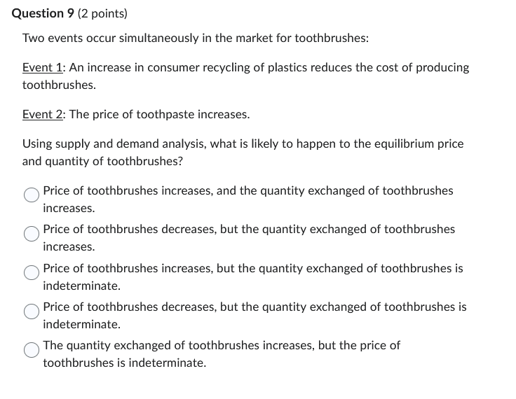
السؤال: حصل حاجتين في نفس الوقت لسوق الشرائح الإلكترونية: 1. أسعار البلاستيك (مادة خام) قلت. (ده يأثر على العرض). 2. أسعار برامج الكمبيوتر (سلعة مكملة) زادت. (ده يأثر على الطلب).
الإجابة: Price decreases, but quantity is indeterminate. (السعر هيقل، بس الكمية مش عارفين) ✅
التحليل: 1. تكلفة قلت: العرض يزيد (Shift Right). -> ده بيقلل السعر ويزود الكمية. 2. سعر المكمل زاد: الطلب يقل (Shift Left). -> ده بيقلل السعر ويقلل الكمية. 3. المحصلة: * في الحالتين السعر نزل. يبقى أكيد السعر هيقل. * بالنسبة للكمية: واحد بيزودها وواحد بيقللها. مين يكسب؟ منعرفش (Indeterminate) لأننا مش عارفين انهي تأثير أقوى.
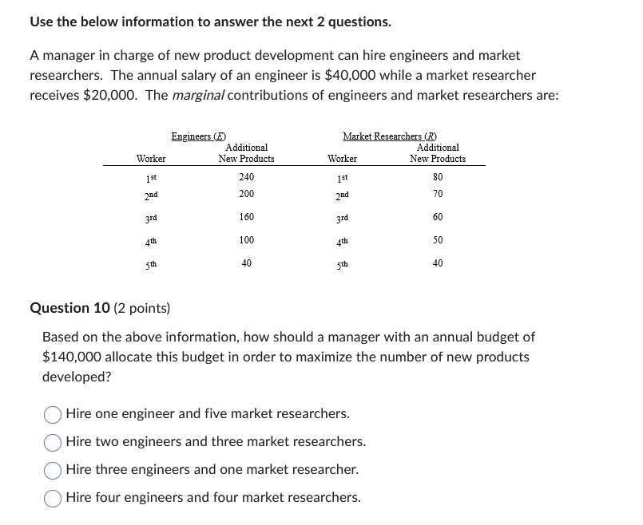
السؤال: عندك ميزانية 140 ألف. * مهندس راتبه 40 ألف. * باحث راتبه 20 ألف. * الجدول بيبين الإنتاجية الحدية (Marginal Product) لكل واحد.
الإجابة: Hire three engineers and one market researcher. ✅
طريقة التفكير (Marginal Analysis): بنشوف كل دولار بندفعه بيجبلنا إنتاجية قد إيه (MP/Price). * المهندس: (240/40=6)، (200/40=5)، (160/40=4). * الباحث: (80/20=4)، (60/20=3).
الخطوات: 1. نعين أول مهندس (قيمة 6). (باقي 100 ألف). 2. نعين تاني مهندس (قيمة 5). (باقي 60 ألف). 3. دلوقتي عندنا تالت مهندس (قيمة 4) وأول باحث (قيمة 4). الاتنين زي بعض. 4. نعين تالت مهندس (باقي 20 ألف). 5. نعين أول باحث (باقي 0). * الخلاصة: 3 مهندسين و 1 باحث. التكلفة: $(3 \times 40) + (1 \times 20) = 140$. مظبوطة.
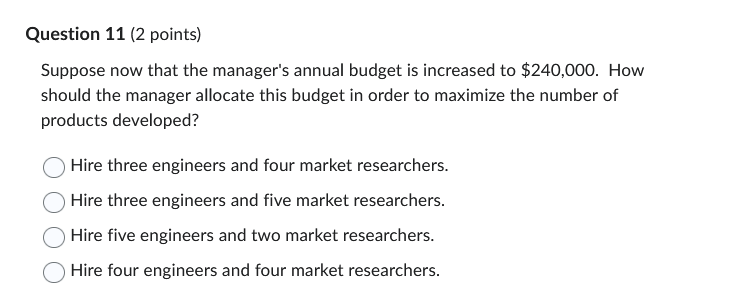
السؤال: نفس الفكرة بس الميزانية زادت لـ 240 ألف.
الإجابة: Hire four engineers and four market researchers. ✅
الشرح: الميزانية كبرت، هنفضل نعين الناس اللي إنتاجيتهم عالية لحد ما الفلوس تخلص وتتحقق قاعدة التوازن $\frac{MP_E}{P_E} = \frac{MP_R}{P_R}$. * لو حسبناها هنلاقي عند 4 مهندسين و 4 باحثين، بنصرف بالظبط 240 ألف، وبنحقق أقصى إنتاج.
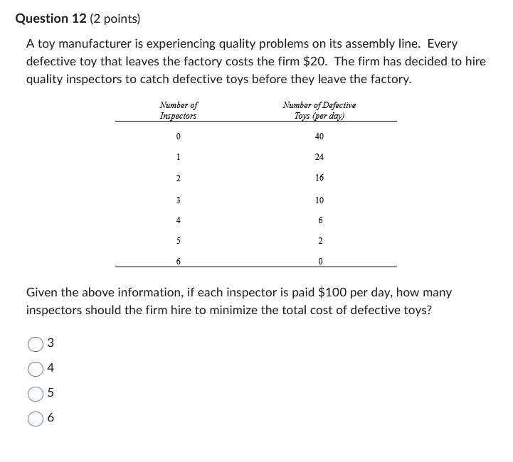
السؤال: تكلفة المفتش 100 دولار. وتكلفة اللعبة المعيوبة (اللي بتعدي) 20 دولار. الجدول بيقول كل مفتش بيسيب كام لعبة معيوبة تعدي.
الإجابة: 3 ✅
الحسبة: الهدف إننا نقلل "التكلفة الكلية" (تكلفة المفتشين + خسارة العيوب). * مفتش 1: تكلفته 100 + عيوب (50 لعبة × 20$) = 100 + 1000 = 1100. * مفتش 2: تكلفته 200 + عيوب (25 × 20) = 200 + 500 = 700. * مفتش 3: تكلفته 300 + عيوب (10 × 20) = 300 + 200 = 500. (أقل تكلفة) * مفتش 4: تكلفته 400 + عيوب (5 × 20) = 400 + 100 = 500. (زيها، بس بنقف عند 3 أوفر).
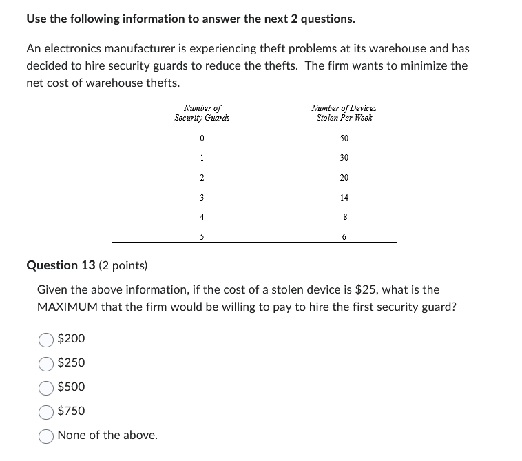
السؤال: كل سرقة بتكلفنا 25 دولار. حارس الأمن بيقلل السرقات من 50 لـ 30. يعني منع 20 سرقة. مستعدين ندفعله كام كحد أقصى؟
الإجابة: $500 ✅
الشرح: قيمته بالنسبالنا هي الفلوس اللي وفرها. وفر 20 سرقة × 25 دولار للسرقة الواحدة = 500 دولار. ده أقصى مبلغ ممكن ندفعهوله (اسمه Marginal Benefit).
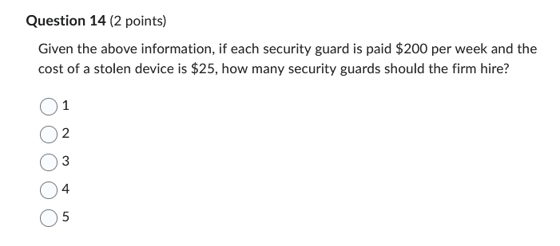
السؤال: لو راتب الحارس 200 دولار في الأسبوع. نعين كام حارس؟
الإجابة: 2 ✅
التحليل (MB vs MC): القاعدة: عين طالما الفايدة (MB) أكبر من أو تساوي التكلفة (MC $200). * الحارس الأول: بيوفر 20 سرقة (=500$). الـ 500 > 200. (عينه ✅). * الحارس الثاني: بيقلل السرقات من 30 لـ 20 (وفر 10 سرقات). قيمتهم 10×25 = 250$. الـ 250 > 200. (عينه ✅). * الحارس الثالث: بيقلل السرقات من 20 لـ 14 (وفر 6). قيمتهم 6×25 = 150$. الـ 150 < 200. (لأ متعهينوش ❌ بتخسر). * يبقى نعين 2 بس.
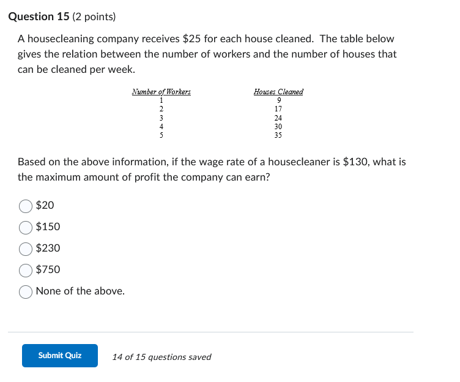
السؤال: الإيراد 25 لكل وحدة تنظيف. أجر العامل 130. الجدول بيبين إنتاجية كل عامل إضافي.
الإجابة: $230 ✅
خطوات الحل: 1. نحسب الربح عند كل مستوى عمالة. (الربح = الإيراد الكلي - التكلفة الكلية). * الإيراد = عدد البيوت × 25. * التكلفة = عدد العمال × 130. 2. عند 4 عمال: * بينظفوا 30 بيت. الدخل = 30 × 25 = 750. * راتبهم = 4 × 130 = 520. * الربح = 750 - 520 = 230. 3. لو جربت أي رقم تاني هتلاقيه أقل من 230.